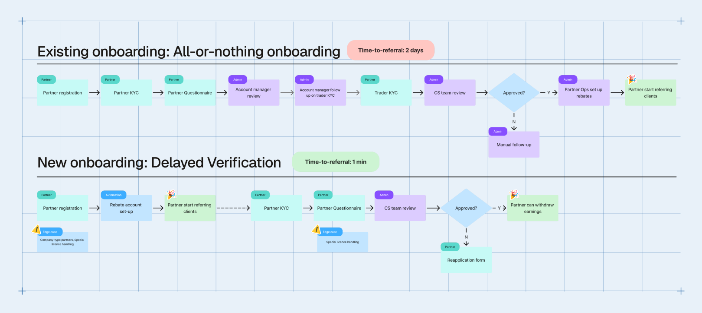
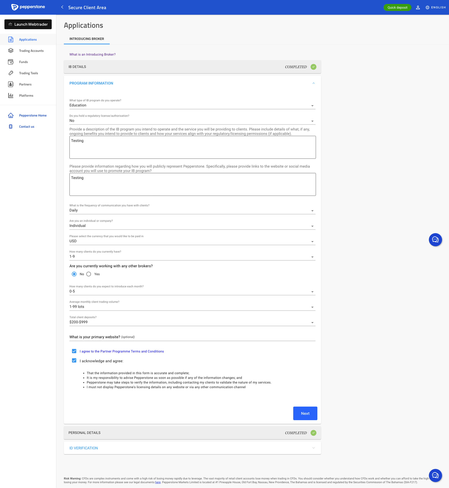
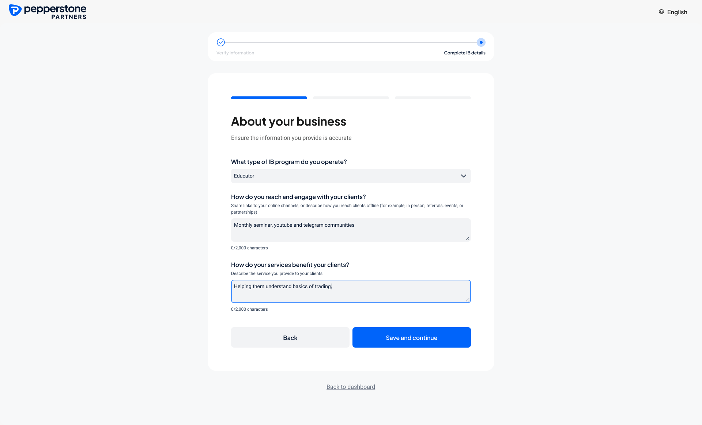
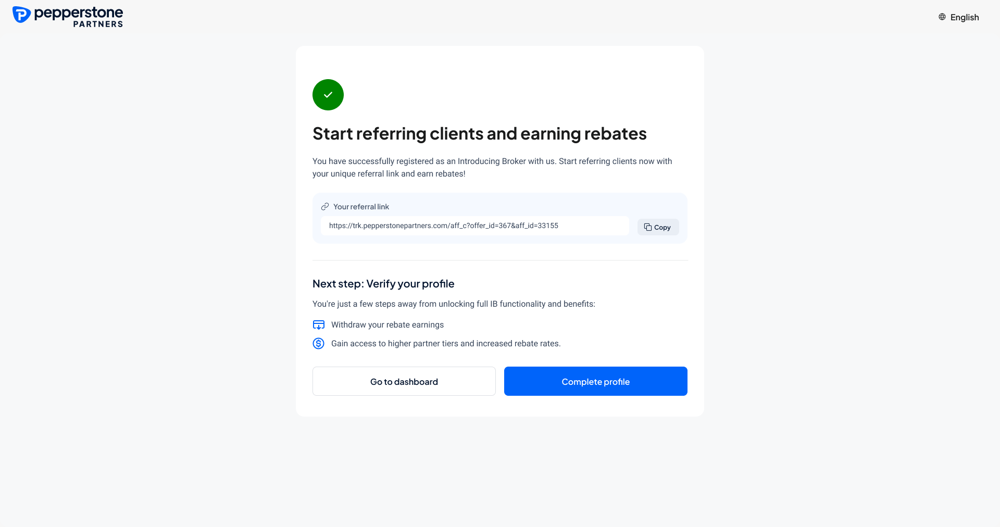
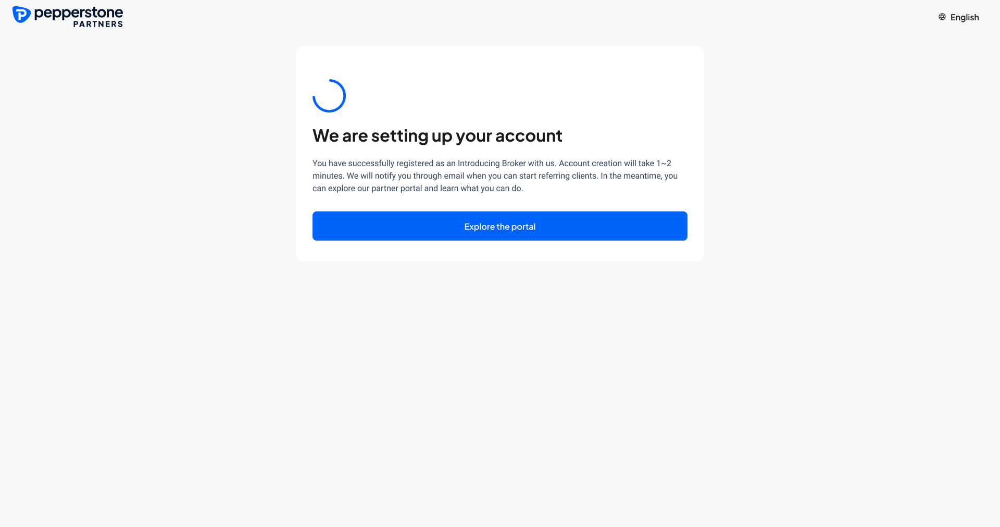
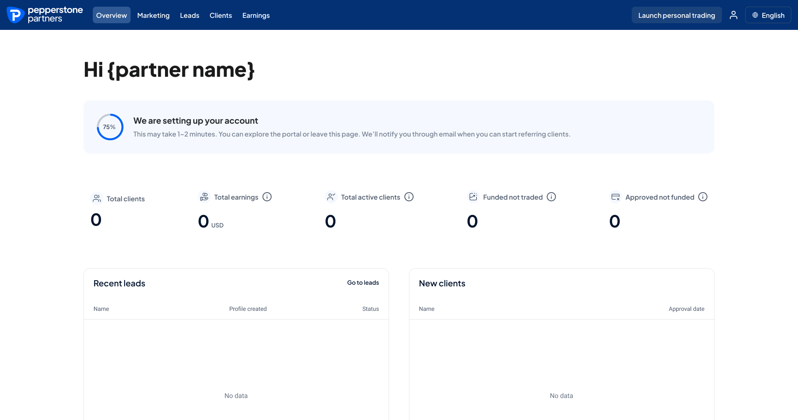

From days to minutes: Redesigning partner onboarding for faster activation
Pepperstone Partnership Program uses a revenue-sharing model designed for educators, signal providers, and trading communities to monetise their networks. Partners earn volume-based rebates and get dedicated support to grow their referral business.
The partner onboarding flow was long, high-friction, and heavily dependent on manual follow-ups from the ops team.
Partners had to complete an all-or-nothing process before they could start referring clients, which caused drop-off and delayed activation from minutes to days.
“This process works, but it’s highly manual and back-and-forth between sales and partners — especially since even opening a trading account is a hassle for the client”
Business Goals
Grow active partners with frictionless onboarding
Reduce redundant steps, lower onboarding friction and enabling faster referrals
Reduce time-to-activation
Automate KYC and account set up to reduce manual ops review dependency and number of follow-ups required
Due diligence at the right time
Moving due diligence to the right moments, not removing it
Understand Current State

Sales & Ops team interview
Interviewed sales, account managers, and ops to understand each step’s purpose and operational cost. Identified where information was duplicated, where checks were delayed, and where partners got stuck.
Scenario mapping with PMs
Mapped the new flow against the legacy flow to ensure we still covered edge cases (business type, COR, new vs. existing user). Defined which steps were required before vs. after activation.
Competitor Benchmarking
Benchmarking competitor platform to compare onboarding patterns and expectation-setting across their journeys.
The User Journey, Before and After
In the legacy flow, 4 out of 9 steps were dependent on admin. Partners could do nothing until it was all done. Now, account set-up is automated and referral starts immediately. Verification is self-paced but not optional, as it blocks withdrawal of earnings.

Design Principles

-
Clarity on the next step
After each step, partners should know exactly what to do next, rather than being left to guess or wait to be contacted.
-
Set expectations when waiting is real
If review takes time, show how long and why.
-
Make long forms feel doable
Longer sections are split into labelled sub-steps with visible progress.
-
Design for mobile-first completion
~19% of partners primarily use mobile, so every step must work end-to-end on mobile.
Solution
Redesigning a legacy application form
The legacy onboarding flow was built on an extremely outdated design system. Although the rebuild upgraded the page to the latest DS with existing components, conscious design decisions were actively made: the structure of the forms, how to show progress and manage expectations, where the form breaks, and what each screen asks.


Before AfterBefore and after comparison of the application form
Immediate activation after registration
Partners can start referring with minimal information. This shifts onboarding from “complete everything first” to “start now, verify progressively.”
Guided onboarding (tour + persistent checklist)
Persistent benefit-driven messaging to encourage partners to complete the rest of the required step.

Split the form into 3 sections partners can finish over time
The onboarding form is divided into three parts that can be completed in separate sittings. Each section provides time estimate and required info for clear expectation setting.

Full mobile experience
We delivered equal experience for mobile for partners on-the-go

Fine-tuning the moment
Designing for waiting
My initial assumption was that the referral link would be ready immediately after registration. In tech review, the developers flagged that account set-up runs in several steps and can take 1–2 minutes, so we need a screen that sets expectations for the wait.




I assumed no wait time for referral link creation
With the assumption, I designed the success screen for a strong call-to-action of starting referral and completing verification.
Let’s just add a loader
With the set-up taking time, my initial draft was to add a simple loading screen. This version quickly dies as it lacks feedback and might lead to partners abandoning and never returning.
Offer alternatives to explore the portal
I then explored redirecting the user to the actual portal to explore while we set up their accounts. However, with the partner info being initialized, there’s not much to show in the portal and thus not much value can be added.
Communicating progress for a 2 min wait
Since 1–2 min is not too long a wait time, I added visual cues of sub-steps with a growing overall progress to keep the user engaged on screen. Email notification upon successful set up was also implemented as a back-up in case they forgot to return.
The widget that tracks what’s left
Upon registration, we need an onboarding widget that clearly communicates the next two steps: KYC and the business questionnaire. With each asking for a different set of information and having its own admin review, we split them into distinct steps, each with its own status indicator.
![Three annotated designs of the onboarding widget. Iteration 01: a single banner reading “Complete your IB profile to enjoy full functionality” with one complete registration button, criticised for having no clear indication of steps and an ambiguous description of what is left. Iteration 02: a stepper headed “Unlock the complete IB functionality in 2 steps” with a get started button, which works better with three or more steps and has no need to scale here. The shipped version: a two-column to-do list with “Verify your identity” marked complete and “Submit your business details” with its own complete now button, giving a clear indication of to-dos and their own statuses.](assets/pepperstone/widget-iterations.png?v=2)
What We Improved
The rebuilt flow did what it was designed to do. More partners make it through approval, and they now get their referral link as soon as they sign up.
A New Bottleneck Appeared
The number of partners approved each month has almost doubled, yet only around 50 start earning in a given month. Approving more partners has not produced more partners earning revenue.
The bottleneck has moved rather than disappeared. The question now is what happens after someone receives their referral link: whether partners need better activation support, whether new partners need a stronger incentive to make a first referral, or whether a looser gate is simply admitting people who were never going to refer anyone.